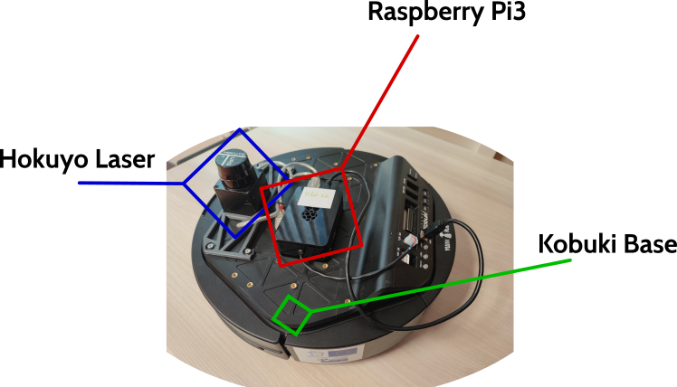

Pibot Robot
ros2 launch slam_toolbox online_sync_launch.py
The mobile robot Pibot is built on top of a Kobuki an Hokuyo laser range supervised with a raspberry-Pi3 computer card.
The ROS2 middleware is adapted to this configuration in the pkg-tbot project.

A pibotXX is automaticaly configured on IOT IMT Nord Europe WiFi with a fixed IP: 10.89.5.XX.
Get Started.
After turning on the robot, the control software is started. At this point the robot is already ready to be controled.
The operator from its computer station need to identify and configure the Pibot domain identifier (Domain_ID) and then start a teleop for instance.
Pibot is automaticly connected to IOT IMT Nord Europe WiFi (be sure that your computer is on the same network) with a Domain_ID matching its Pibot number.
For instance pibot22 is configured with 22.
On your ROS terminal:
export ROS_DOMAIN_ID=22
ros2 node list
ros2 topic list
At this point, you can verify that laser is publishing data into the /scan topic and that multiplexer node is started.
The multiplexer from basic_node package, listen to several command sources to select the most appropriate one.
So you can take control with a classical teleop node connected to the multi/cmd_teleop topic, start slam capability etc...
ros2 run teleop_twist_keyboard teleop_twist_keyboard cmd_vel:=/multi/cmd_teleop
ros2 launch slam_toolbox online_sync_launch.py
...
To notice that your autonomous control should send velocity messages to multi/cmd_nav (/multi/cmd_teleop is reserved to human teleoperation).
Get Started v2 (from mb6_sapce)
From mb6_sapce directory, it is possible to configure once for all the ROS_DOMAIN_ID by editing the config.toml and sourcing ./bin/run-commands.bash
cd /path/to/mb6_space
gedit config.toml
source ./bin/run-commands.bash
Each new terminal will be open on the same configuration.
You can then, connect your __pibotXX_ with rviz2.
rviz2 rviz-conf/simple-pibot.rviz
you can also try SLAM:
# Terminal 1
ros2 launch slam_toolbox online_sync_launch.py
# Terminal 2
rviz2 rviz-conf/pibot-with-map.rviz
Get Started v3 (hard linked)
Pibot Configuration
Pibot relies on several ros packages:
- [mb6-space] on the pibot branch for install and service configuration.
- pkg-tbot for Kobuki + laser drivers and configurations.
- pkg-basic to allow basic/simple controls and tools.
Shutdown Check List
- Connectect the Pibot with SSH.
sudo poweroffousudo shutdown -h now.- Wait to be sure the shutdown process is terminated.
- Switch-off the robot.
- Plug the robot to permit its recharge.